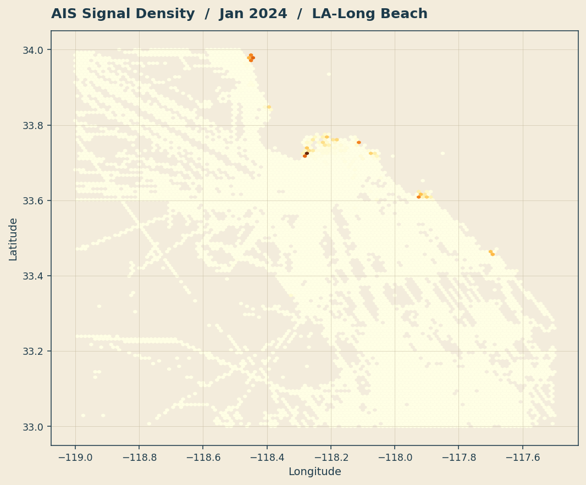
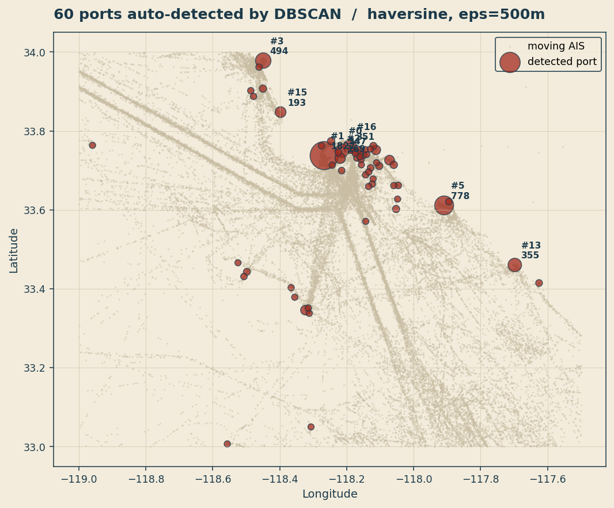
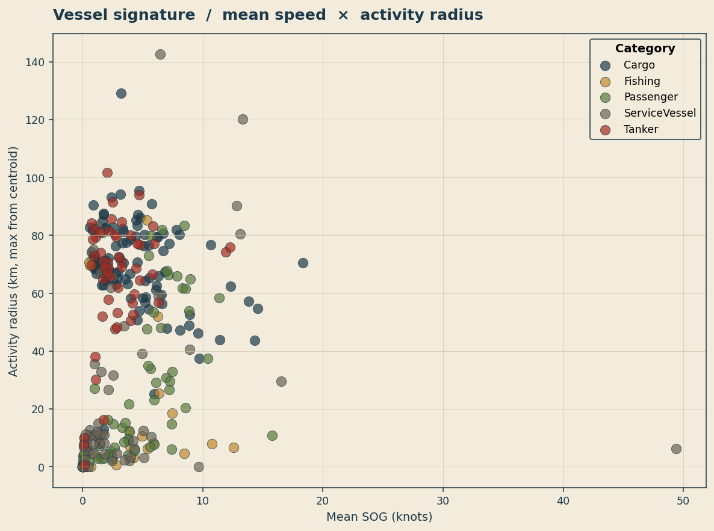
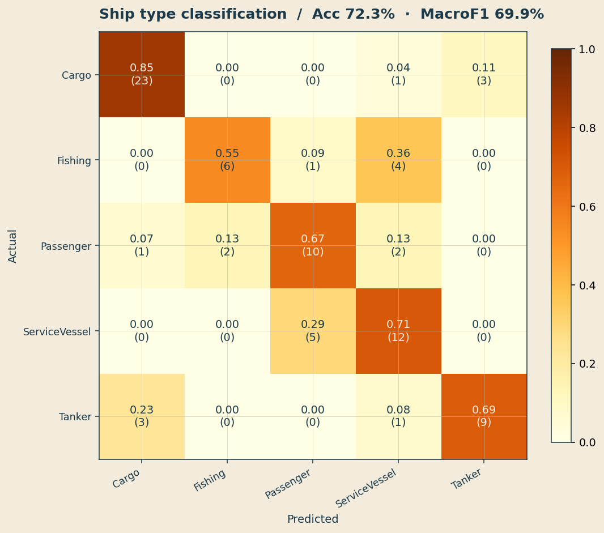
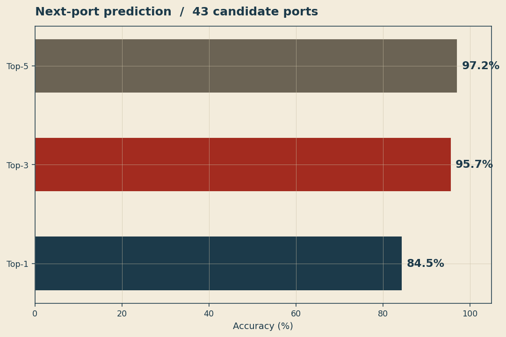
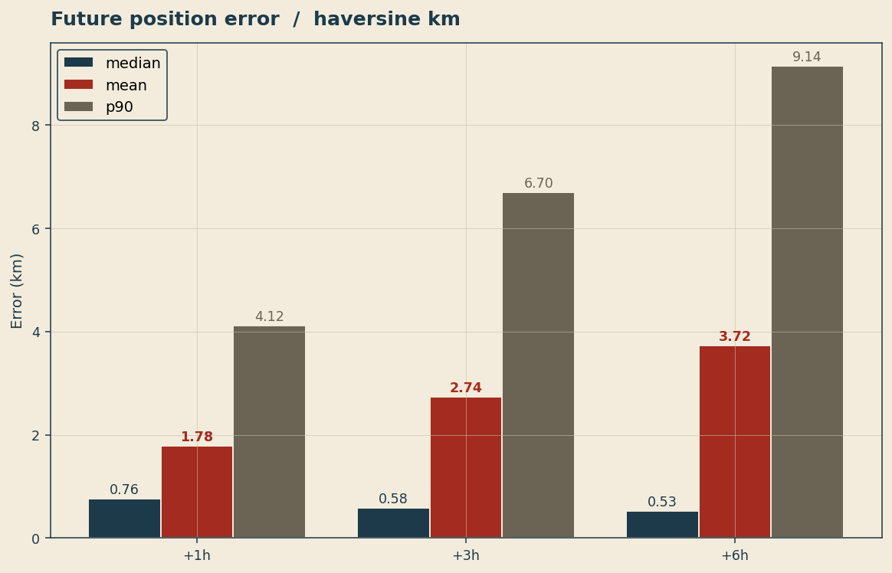

바다 위 1,193척이 11일 동안 송신한 280만 줄의 위치 신호로, 누구도 손으로 라벨을 붙이지 않은 60곳의 항만을 자동으로 찾아내고, 다음에 어디로 갈지 84.5% 확률로 맞히고, 1시간 뒤 좌표를 평균 1.78km 오차로 예측한 기록.
전 세계 모든 큰 배는 의무적으로 AIS(Automatic Identification System) 라는 장치를 켜고 다닙니다. 30초~몇 분에 한 번씩, "나는 누구이고, 어디에 있고, 얼마나 빠르게 어느 방향으로 가고 있다"는 정보를 무선으로 쏘는 장치입니다. 자동차의 블랙박스가 아니라, 배 스스로가 외치는 위치 안내방송이라고 보면 됩니다.
이 신호를 미국 해안경비대(USCG)가 모아서, NOAA(미국 해양대기청)가 일반에 무료로 공개하고 있습니다. 우리는 그 공개 데이터의 11일치를 가져다 분석했습니다.

NOAA는 일별 ZIP 파일 형태로 전미 AIS 데이터를 공개합니다. 하루치 압축본은 약 290MB, 한 달이면 9GB. 글로벌 전체를 보는 건 분석 부담이 크기 때문에, 트래픽이 가장 많고 항로가 명확한 로스앤젤레스·롱비치 항만 일대로 좁혔습니다 (위도 33–34°, 경도 -119 ~ -117.5°).
BBOX는 bounding box의 줄임말로, 지도 위에 사각형을 하나 그어 그 안의 점만 남기는 작업입니다. 미국 전체 데이터(하루 730만 행) 중 LA 박스 안에 들어오는 건 약 3.5%(약 26만 행)뿐이었습니다. 이 한 줄짜리 조건문 덕분에 9GB가 13MB로 줄어듭니다.
# 핵심은 이 한 줄 mask = (df.LAT.between(33.0, 34.0) & df.LON.between(-119.0, -117.5)) filtered = df[mask]
이 프로젝트가 이전 버전(shipml_tp)과 가장 다른 지점입니다. 이전에는 KMeans로 12개 클러스터를 만들고 그것을 "항로 라벨"이라고 불렀는데, 사실 자기가 만든 라벨을 자기가 맞히는 셈이었습니다.
이번에는 라벨을 배의 행동에서 직접 추출합니다. 배가 30분 이상 SOG < 0.5노트로 머물렀다면 그곳은 정박지입니다. 모든 정박지 좌표를 모아 DBSCAN(밀도 기반 군집화) 알고리즘에 넣으면, 자동으로 "여기는 항만 #1, 저기는 항만 #5"라는 식으로 60개 클러스터가 생깁니다.
그 결과 11일 동안 발생한 5,666건의 정박 이벤트가 60개 항만으로 묶였고, 가장 붐비는 항만 #1(롱비치 컨테이너 터미널 부근)에는 285척이 1,827번 들어왔다 나갔습니다.
| port | 위치 | 방문 척수 | 총 입항 횟수 |
|---|---|---|---|
| #1 | 33.737, -118.267 | 285 | 1,827 |
| #5 | 33.611, -117.909 | 157 | 778 |
| #3 | 33.978, -118.449 | 179 | 494 |
| #13 | 33.460, -117.698 | 48 | 355 |
| #16 | 33.760, -118.190 | 45 | 351 |

같은 화물선이라도 컨테이너선과 유조선의 운항 시그니처는 다릅니다. 평균 속도, 활동 반경, 정박 비율 같은 행동 통계 14개로 5가지 카테고리(Cargo·Tanker·Passenger·Fishing·ServiceVessel)를 분류했습니다.

model = RandomForestClassifier( n_estimators=400, min_samples_leaf=2, class_weight="balanced_subsample", ) # 14개 vessel-level feature 사용: # sog_mean, sog_std, sog_max, sog_p90, # pct_at_anchor, pct_slow, pct_cruising, # radius_km, duration_h, n_observations, # cog_circular_std, width, length, draft
| feature | 중요도 |
|---|---|
| length (배 길이) | 0.163 |
| draft (흘수) | 0.134 |
| width (너비) | 0.107 |
| sog_max (최대 속도) | 0.086 |
| pct_slow (저속 비율) | 0.064 |

이 모델이 이 프로젝트의 주요 신규 기여입니다. 어떤 배가 한 항만에서 출항하면 다음에 어느 항만으로 가는지 예측합니다. ETA 추정·물류 계획·해양 안전에 모두 의미 있는 문제입니다.
훈련 데이터는 04단계에서 얻은 5,666건의 정박 이벤트를 시간순으로 배열해 만든 4,555개의 (현재 항만 → 다음 항만) 페어입니다. 입력 feature는 현재 항만 ID, 선종, 출항 시각(요일·시간), 선체 제원, 평균 속도. 출력은 60개 항만 중 어디로 갈지의 확률 분포.
같은 선박이 train/test에 섞이면 부정 누수가 생기므로 MMSI 기준 GroupShuffleSplit으로 분리했습니다. 즉 test에 등장하는 배는 학습 때 한 번도 본 적 없는 배.
# MMSI 기준 분리 — 같은 배가 양쪽에 안 가도록 gss = GroupShuffleSplit(test_size=0.25, random_state=42) tr, te = next(gss.split(X, y, groups=df.MMSI)) # 입력 — 범주형 + 수치형 혼합 cat_feats = ["curr_port", "vessel_category", "depart_hour", "depart_dow"] num_feats = ["duration_at_port_min", "width", "length", "draft", "sog_mean"]

무작위로 찍으면 정확도는 1/44 = 약 2.3%입니다. 84.5%는 그것의 37배입니다. 게다가 같은 항만 시스템 안에서 배가 다음에 갈 곳은 강한 행동 패턴을 따른다는 사실(예: 컨테이너선은 컨테이너 터미널끼리, 유조선은 유조 터미널끼리)을 모델이 데이터만 보고 학습한 결과입니다.
출발점과 현재 운항 정보(LAT, LON, SOG, COG, Heading)만 주고, 1시간·3시간·6시간 뒤의 좌표를 예측합니다. 이전 프로젝트(shipml_tp)는 1시간 후 평균 오차 2.80km였는데, 이번에는 1.78km로 36% 개선되었습니다.

각 선박의 시계열에서 시점 t와 t+H를 매칭하는 (t→t+H) 페어를 만듭니다. pd.merge_asof를 활용해 정확히 H시간 간격이 아니어도 ±10분 이내 가장 가까운 신호로 매칭합니다.
for mmsi, g in df.groupby("MMSI"): target_t = g.BaseDateTime + horizon pairs = pd.merge_asof( g.assign(target_t=target_t), g[["BaseDateTime","LAT","LON"]], left_on="target_t", right_on="BaseDateTime", tolerance=timedelta(minutes=10), direction="nearest", )
| horizon | 중앙값 | 평균 | p90 |
|---|---|---|---|
| + 1 시간 | 0.76 km | 1.78 km | 3.95 km |
| + 3 시간 | 0.58 km | 2.74 km | 6.51 km |
| + 6 시간 | 0.53 km | 3.72 km | 10.0 km |
※ 평가는 haversine 거리(곡면 지구 위 진짜 거리)로 했습니다. 위경도 차이를 직선으로 더하는 건 적도와 극지방에서 오차가 다르므로 부적절합니다.
| 역할 | 기술 | 용도 |
|---|---|---|
| 언어 | Python 3.14 | 전체 파이프라인 |
| 데이터프레임 | pandas 3.0 + pyarrow | CSV 청크 읽기, Parquet I/O |
| 저장 포맷 | Apache Parquet (zstd) | CSV 대비 1/5 용량, 10배 빠른 읽기 |
| 병렬 다운로드 | concurrent.futures.ThreadPoolExecutor | 4-워커 동시 ZIP 받기 + 백오프 |
| 군집화 | scikit-learn DBSCAN (haversine) | 항만 자동 식별 (라벨 없는 학습) |
| 분류 | RandomForestClassifier | 선종 / 다음 항만 |
| 회귀 | RandomForestRegressor | 미래 좌표 (lat, lon) |
| 평가 | StratifiedKFold, GroupShuffleSplit | MMSI 단위 누수 방지 |
| 거리 함수 | haversine (자체 구현) | 곡면 지구 보정 km 오차 |
| 시각화 | matplotlib | 해도풍 PNG 6종 |
# 1) 가상환경 + 패키지 python3 -m venv .venv .venv/bin/pip install -r requirements.txt # 2) NOAA 데이터 다운로드 + LA 영역 필터 (병렬) .venv/bin/python pipeline/02_download_and_filter_parallel.py # 3) 합본 + 항만 자동 식별 + feature .venv/bin/python pipeline/03_combine_and_inspect.py .venv/bin/python pipeline/04_extract_port_calls.py .venv/bin/python pipeline/05_vessel_features.py # 4) 모델 학습 .venv/bin/python models/ship_type/train.py .venv/bin/python models/next_port/train.py .venv/bin/python models/future_position/train.py # 5) 시각화 .venv/bin/python pipeline/06_make_visualizations.py
다운로드는 본 보고서 작성 중에도 백그라운드에서 계속 받고 있어, 31일치 전체가 모이면 다음 보고서에서는 (1) 시간대별 항만 트래픽 패턴, (2) 평일/주말 차이, (3) Tanker ↔ Cargo 혼동을 줄이기 위한 시퀀스 모델(LSTM) 비교, (4) Flask + Leaflet 라이브 지도 데모를 다룰 예정.